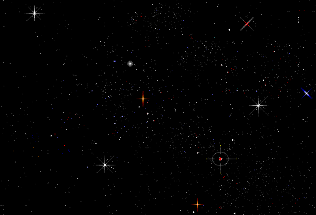

Bạn đang ở thư viện
đang cảm thấy bối rối
||-------------------------------------------------------||
||.--. .-._ .----. ||
|||==|____| |H|___ .---.___|""""|_____.--.___ ||
||| |====| | |xxx|_ |+++|=-=|_ _|-=+=-|==|---|||
|||==| | | | | \ | | |_\/_|Black| | ^ |||
||| | | | | |\ \ .--. | |=-=|_/\_|-=+=-| | ^ |||
||| | | | | |_\ \_( oo )| | | |Magus| | ^ |||
|||==|====| |H|xxx| \ \ |''| |+++|=-=|""""|-=+=-|==|---|||
||`--^----'-^-^---' `-' "" '---^---^----^-----^--^---^||
||-------------------------------------------------------||
||-------------------------------------------------------||
|| ___ .-.__.-----. .---.||
|| |===| .---. __ .---| |XX|<(*)>|_|^^^|||
|| , /(| |_|III|__|''|__|:x:|=| | |=| Q |||
|| _a'{ / (|===|+| |++| |==| | | |Illum| | R |||
|| '/\\/ _(|===|-| | |''| |:x:|=| |inati| | Y |||
||_____ -\{___(| |-| | | | | | | | | | Z |||
|| _(____)|===|+|[I]|DK|''|==|:x:|=|XX|<(*)>|=|^^^|||
|| `---^-^---^--^--'--^---^-^--^-----^-^---^||
||-------------------------------------------------------||
||_______________________________________________________||
BOOKS R PEOPLE 2
Ø)xxxxx[╣╗╗╕╕╕=======────────────
Thư viện là nơi để tìm hiểu những thứ mà bạn chưa biết.
Là nơi bạn nhận ra rằng không chỉ có một mình bạn mới nghĩ như vậy!
Để tìm ra rằng có quá nhiều thứ trên thế giới đã và đang nằm ngoài kiến thức của bạn.
Là một nơi yên tĩnh.
Để khiêm tốn.
Để học.
Ø)xxxxx[╣╗╗╕╕╕=======────────────
Đây là nguồn thông tin vô tận
Chào mừn đến thời đại của thông tin. Mọi thứ đều có thể xử lí được. Và không có gì là hợp có lý cả.
Vậy hãy đi với bọn mình trên hành trình đến với mặt tối của vũ trụ, tới nơi sâu thẳm nhất, đại dương của sự thật, đến với lòng đất bao la của kiến thức and sự hiểu biết. ÂM NHẠC!
- underground -
"một thứ duy nhất mà tôi biết, đó là tôi không biết gì hết"
về: kiến thức và sự hiểu biết
Đây là phần sẽ được phát triển bởi những người đến từ/yêu Saigon <3 để chia sẻ những kiến thức và sự hiểu biết của họ đến bạn...
music tools table
Những nghệ sĩ, những người đã trải nghiệm nhiều, người lớn tuổi thông thái, hoặc những người trẻ tuổi tươi mới sẽ truyền đạt kinh nghiệm của họ về việc làm hay tạo ra nhạc, những tiếng ồn, những âm thanh và hơn thế nữa.
[...chia sẻ kinh nghiệm của chính bạn, là giúp cộng đồng của chúng ta ngày càng phát triển...]
| loại công cụ | tên công cụ | kiến thức |
|---|---|---|
| production | ableton live | (✖╭╮✖) không cần trí tuệ |
| production | fl studio | còn được gọi là 'fruity loops' |
| live coding | tidal cycles | (✖╭╮✖) không cần trí tuệ |
| live coding | pure data | (✖╭╮✖) không cần trí tuệ |
| DJ | rekordbox | rekordbox là nơi lưu trữ và sắp xếp âm nhạc của bạn nếu bạn muốn mix các bản nhạc và cuối cùng là DJ tại các bữa tiệc (✖╭╮✖) dù cần nhiều sự khéo léo |
| DJ | serato | serato là một phần mềm tương tự như rekordbox để sắp xếp âm nhạc, tiện lợi cho các DJ, nhưng bạn sẽ phải lựa chọn bạn thích cái nào hơn và chỉ sử dụng cái đấy. Nó sẽ trở nên rất lộn xộn khi bạn có nhiều bản nhạc và muốn sử dụng cả hai! (✖╭╮✖) cần thêm sự hiểu biết |
| DJ | traktor | (✖╭╮✖) không cần trí tuệ |
| DJ lite | Mixxx | (✖╭╮✖) không cần trí tuệ |
| DJ lite | WeDJ | Rất hay khi mới bắt đầu và sử dụng cùng với một trong những bộ điều khiển WEGO của pioneer. Một trong những dòng bàn xoay DJ có giá thấp hơn hiện nay. |
| DJ lite | djay | (✖╭╮✖) no wizdom |
- Các công cụ DJ lite sẽ rất hay cho những bạn mới bắt đầu. Một số thậm chí còn miễn phí và có sẵn trên app, nhưng bạn sẽ có được những trải nghiệm tốt nhất khi sử dụng máy tính bàn hoặc máy tính xách tay.
- Các công cụ DJ dành cho những bạn sử dụng với mụch đích nghiêm túc hơn. Nhưng mà nó không có quá nghiêm túc đâu các bạn ạ. Rốt cục thì tất cả cũng là để giải trí.
- Các công cụ sản xuất âm nhạc dành cho những người mới đang muốn tạo ra âm nhạc, dù hoàn toàn là bằng điện tử, hay sử dụng các công cụ các khác.
- Các công cụ coding dành cho các bạn muốn sự sáng tạo. Khám phá thế giới âm nhạc trong tầm tay.
Tự mình khám phá mọi thứ. Và một khi bạn đã bắt đầu, hãy quan sát xung quanh, xin lời khuyên hoặc có thể đăng ký học một số khóa học trực tuyến hoặc trực tiếp. Có rất nhiều khóa học đang diễn ra ở Sài Gòn (khi chúng mình thoát khỏi cảnh lệnh đóng cửa Sài Gòn >.<).
- sâu thẳm đại dương -
"Language is a virus from outer space."

về: sự thật
Phần này bao gồm rất nhiều từ - thuật ngữ - các từ gây khó hiểu, những từ dành cho những ai ‘hiểu rõ’.
Thật khó để khám phá ra 'sự thật' và thật khó để nhận ra những điều mà bạn không biết ... Khi bạn bắt đầu tìm đến những sự thật, bạn phải bắt đầu bằng cách cảm thấy thoải mái với việc cảm thấy không thoải mái. Việc tìm kiếm sự thật đòi hỏi bản thân bạn phải kiên nhẫn, mắc lỗi sai và tìm ra câu trả lời, thậm chí mặc dù bạn không tìm ra.
âm nhạc là cuộc sống
genre style influence label taste traditional contemporary avante-garde underground classical world mainstream popular punk techno house garage disco queer music minority communities ambient breaks hyperpop bubblegum bass noise broken rap hip-hop vinahouse EDM EBM IDM industrial vocaloid glitch VGM hardcore breakcore nucore metal darkwave goth witchcore
chỉ dành cho mọt sách
file types .mp3 320kbps .wav .aiff bitrate Energy 7 key 200 BPM sync free download purchase stolen music sample mastering soulseek is my best friend daw
- mặt tối -
"i'm next level, so legit with all my
click, click, click, yeah."

về: vũ trụ
Đây là phần có đầy đủ các external links ở bên ngoài dẫn đến vũ trụ internet mà có thể dạy cho bạn những thứ mà bạn không biết, hoặc những thứ bạn không biết bạn không biết.
|--nhấp chuột để biết thông tin--|
- every noise at once = 'các tiếng ồn'
- --đây là một bảng bao gồm khá nhiều các loại âm thanh khác nhau, gần như là tất cả.
- bandcamp
- --một nguồn âm nhạc phong phú, đầy đủ các bài báo và âm nhạc có sẵn để nghe.
- --hỗ trợ các nghệ sĩ (địa phương) yêu thích của bạn và mua các bản tải xuống.
|--nhấp chuột để giải trí--|
- holly+
- --một số điều thú vị để thay đổi âm nhạc, do Holly Herndon tạo ra.
|--nhấp chuột để vào phần mềm--|
- ableton live
- đây là đường link dẫn đến bản miễn phí
- FL studio
- cũng được biết đên như là 'fruity loops'
- tidal cycles
- phần mềm live coding
- pure data
- một phần mềm live coding khác
- rekordbox
- bản miễn phí, bạn có thể trả sau nếu bạn muốn nâng cấp những gói khác
- serato
- tải xuống các phần mềm DJ ‘lite’ tại đường link
- serato còn có các công cụ khác để sản xuất âm nhạc
- traktor DJ 2
- traktor có nhiều chức năng trên màn hình để mix
- Mixxx
- phần mềm DJ, công cụ DJ phổ biến trên máy tinh
- WeDJ (app store)
- WeDJ (google play store)
- đây là một công cụ hữu ích nếu bạn có hoặc dự định mua một trong những bộ điều khiển pioneer
- djay PRO
- đây là một đường link đến máy tính để bàn hoặc laptop cho bản phần mềm
- bạn cũng có thể tìm các app dành cho điện thoại trên website này
các công cụ sản xuất âm nhạc
các công cụ live coding
các công cụ DJing
DISCLAIMER ALERT
Bất kỳ thông tin nào bạn tìm thấy bên ngoài trang web này không phải là ý kiến của chủ sở hữu, bạn bè, người sử dụng hoặc bất kỳ ai liên quan đến \..SG_CR../ Saigon Community Radio and therefore may be surprisingly useful.
ở yên bên trong \..SG_CR../
- Đi tới:= nhà vệ sinh.
- Đi tới:= thu viện.
- Đi tới:= ban công.
- Khám phá:= khu rừng.
- Khám phá:= k h ô n g _ g i a n.

Không có nơi nào như ở nhà.